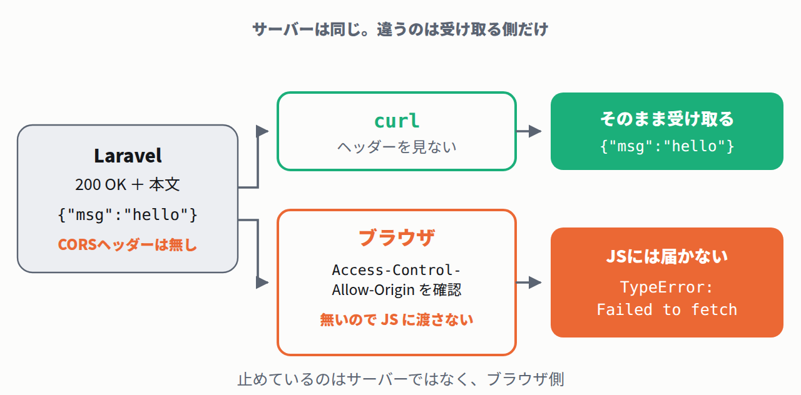

同じサーバー・同じ設定に、curlとChromiumを当てた
まず言葉を2つ。CORSとは、別のオリジンにあるAPIを、ブラウザ上のJavaScriptから呼んでいいかを決める仕組みです。オリジンとは「スキーム＋ホスト＋ポート」の組のこと(https://example.com:443 なら https がスキーム、example.com がホスト、443 がポート)。
もう1つ。curlとは、ブラウザを介さずコマンドラインからHTTPリクエストを送る道具です。この記事ではブラウザとの比較役です。
Laravel側の許可リストには game.example.com と app.example.com だけを書き、実験ページのオリジン http://127.0.0.1:8130 は入れていません。この状態で両方から叩きます(リクエストを送ります)。出力中の $API は、APIのURL(http://127.0.0.1:8123/api/hello)を入れた変数です。
-- curl から (ブラウザではない) $ curl -s -o /dev/null -D - \ -H "Origin: http://127.0.0.1:8130" \ "$API" HTTP/1.1 200 OK Vary: Origin $ curl -s "$API" {"msg":"hello"}
-- Chromium から ページのオリジン: http://127.0.0.1:8130 API: http://127.0.0.1:8123/api/hello fetch: 失敗 TypeError: Failed to fetch -- ブラウザのコンソール Access to fetch at 'http://127.0.0.1:8123/api/hello' from origin 'http://127.0.0.1:8130' has been blocked by CORS policy: No 'Access-Control-Allow-Origin' header is present on the requested resource. Failed to load resource: net::ERR_FAILED
サーバーは200を返し、本文 {"msg":"hello"} も渡しています。1バイトも隠していません。エラー文をよく読むと「blocked by CORS policy」、つまり止めたのはブラウザ自身だと言っています。

Fetch仕様(ブラウザの通信処理を定めるWHATWGの標準)も、判定の主体をブラウザ側に置いています。
Upon receiving a response from bar.invalid, the user agent will verify the Access-Control-Allow-Origin response header. If its value is either https://foo.invalid or `*`, the user agent will invoke the success callback. If it has any other value, or is missing, the user agent will invoke the failure callback. （bar.invalid からレスポンスを受け取ると、 ユーザーエージェント(ブラウザ)は Access-Control-Allow-Origin レスポンス ヘッダーを検証する。値が https://foo.invalid か * なら成功のコールバックを、それ以外の 値なら、あるいは無ければ、失敗の コールバックを呼ぶ）
- リクエストは届き、レスポンスも返ってきています。ブラウザがその結果をJavaScriptに渡すかどうかを、ヘッダーを見て決めているだけです。
- だから「curlで確認できた」はブラウザで動く保証になりません。逆に「curlは通るのにアプリだけ落ちる」は、CORSを疑う典型的な症状です。
- サーバー側の設定だけで直ります。許可リストにページのオリジンを足して同じ実験をやり直すと、こうなりました。
http://127.0.0.1:8130 を足したあと-- Chromium から(設定を足したあと) ページのオリジン: http://127.0.0.1:8130 API: http://127.0.0.1:8123/api/hello fetch: 成功 status=200 本文: {"msg":"hello"} -- ブラウザのコンソール (エラーなし)
Q. Laravelのログには200が並んでいるのに、画面にデータが出ない。データを止めたのは誰?
正解。「拒否されたならログに4xxが出るはず」と考えるのは自然ですが、サーバーは200と本文を普通に返しています(上の実測)。ブラウザが応答の Access-Control-Allow-Origin を自分のオリジンと見比べて、合わなければJSに渡しません。だからサーバーのログは無傷で、ブラウザのコンソールにだけエラーが出ます。障害の切り分けでは、この非対称を最初に思い出してください。